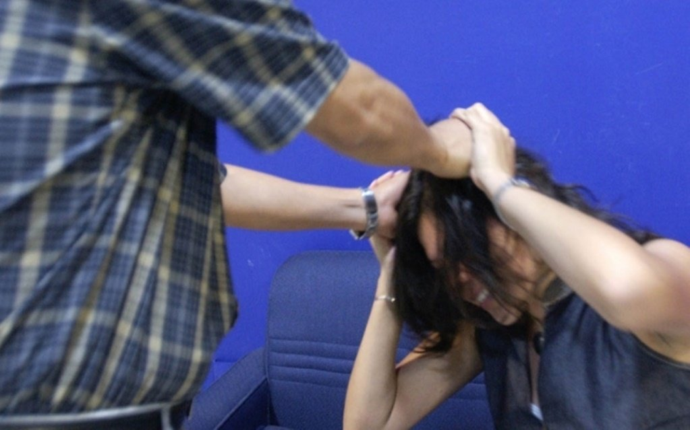
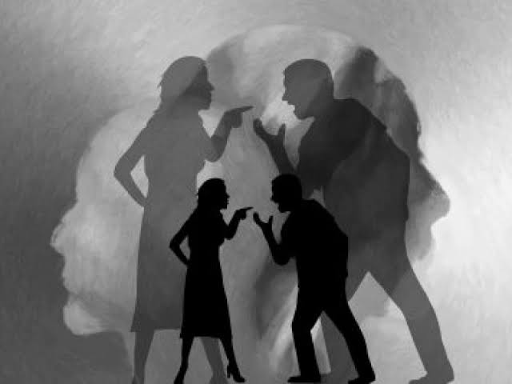

LA VIOLENCIA FAMILIAR
COLEGIO DE BACHILLERES DEL ESTADO DE MEXICO
PLANTEL 17 HUIXQUILUCAN II
La violencia familiar puede involucar el uso de intimidacion y amenazas o conductas violentas para ejercer poder y control sobre otras personas. |
 |
1.Maltrato de pareja intima.2.Violencia domestica. 3.Maltrato infantil. 4.Abuso infantil. 5.Violencia en el noviazgo. |
|---|
 |
Al rededor de 4,8 millones de mujeres son victimas de maltrato.La mayor frecuencia de violencias hacia un conyuge esta asociada ccon un mayor riesgo de que el conyuge violento tambien maltrate a los hijos. |
FISICA: Se refiere a las palizas o golpes.SEXUAL: Suele acompañar o seguir el maltraato fisico, y tiene como consecuenciauna violacion. PSICOLOGICA O EMOCIONAL: Una persona que maltrata a menudo lo hace con palabras. ACOSO: Consucata de hostigamiento o amenaza repetida que a menudo deriva en maltrato fisico o sexual. |
*Busque un lugar seguro en su casa*Sepa a quien contactar en caso de una crisis. *Memorice todos los numeros de telefono importante. *Tenga siempre con usted dinero y cambio. *Guarde los papeles y documentacion importante. |
|---|
COPYRIGHT ROSAS SOLANO FERNANDA 604 VESPERTINO |